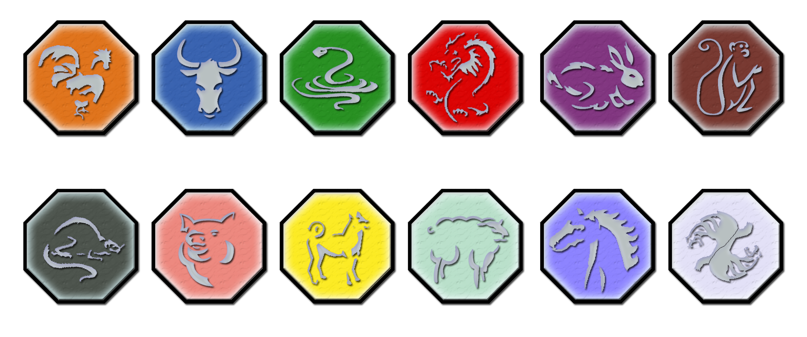

ADVENTURE OF Jackie_Chan
Haiku
The noble Monkey who received the Talisman power of shapeshifting when the Talismans were destroyed. Haiku is an endangered Japanese monkey owned by a rich businessman.
Lucky
The noble Rabbit who received the Talisman power of speed when the Talismans were destroyed. Lucky is the Jackalope mascot for a high school football team.
Bob
The noble sheep who received the Talisman power of astral projection when the Talismans were destroyed. Bob (pronounced baaaaa-b) belongs to a Scottish shepherd near the shores of Loch Ness. In his astral form, he speaks very grand in a Scottish accent, similar to Sean Connery.
Royal Medicine
The noble Horse who received the Talisman power of healing when the Talismans were destroyed. She is a racing Horse found at the Kempton Racecourse in London, England.
Sampa
The noble Snake who received the Talisman power of invisibility. She is a king cobra found in India before hatching and turned Tohru's mom invisible when she touched her egg.
Aesop
The tortoise who appeared in the episode "Shell Game". He had the Rabbit talisman embedded into his shell so he could move at super speed.
Ruby
A stray cat Jade befriends in a ruined Moroccan palace in "Enter the Cat." Cute, but unhelpful, she helps the team only accidentally through her love of milk and protectiveness of Jade.
Yingyang
The panda that takes the Moon Demon power from the lotus flower of the Immortals in its habitat. Jackie, Uncle, and Tohru eventually remove the Chi from the animal.